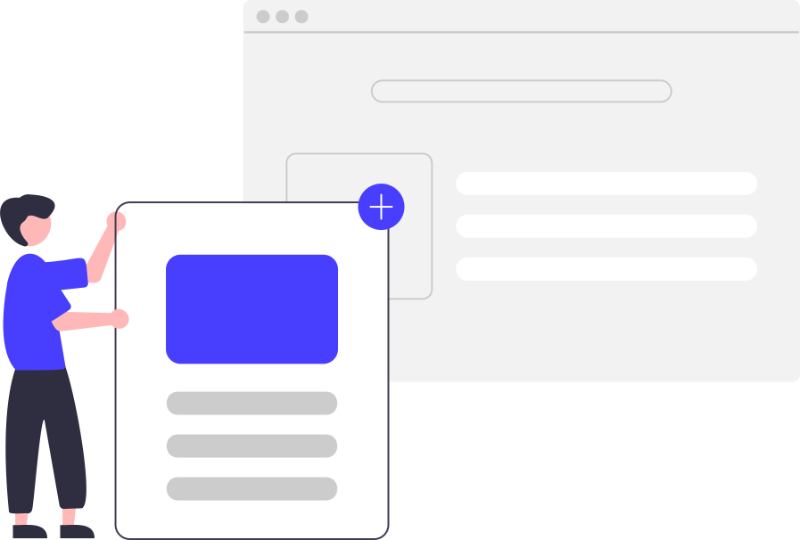

Blogs
In this blog, we'll talk about Why ReactJs is preferred more over vanilla Js.
Read MoreIn this blog, I talked about Box model in css.
Read MoreIn this blog, we'll talk about Why ReactJs is preferred more over vanilla Js.
Read MoreIn this blog, I talked about Box model in css.
Read More